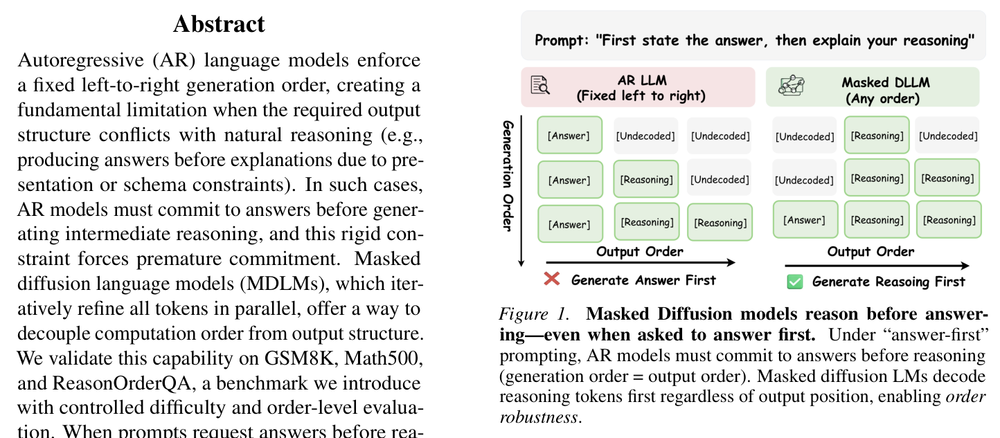
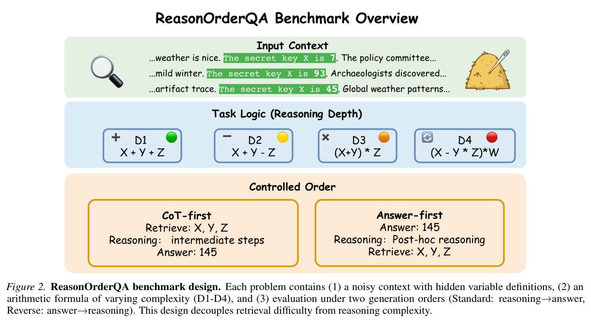
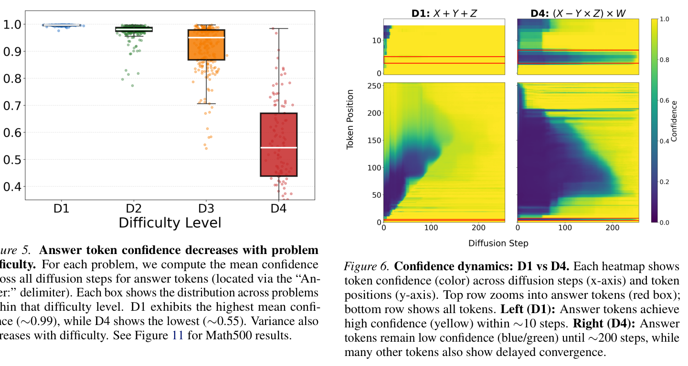
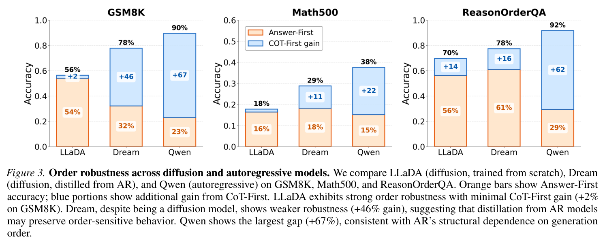
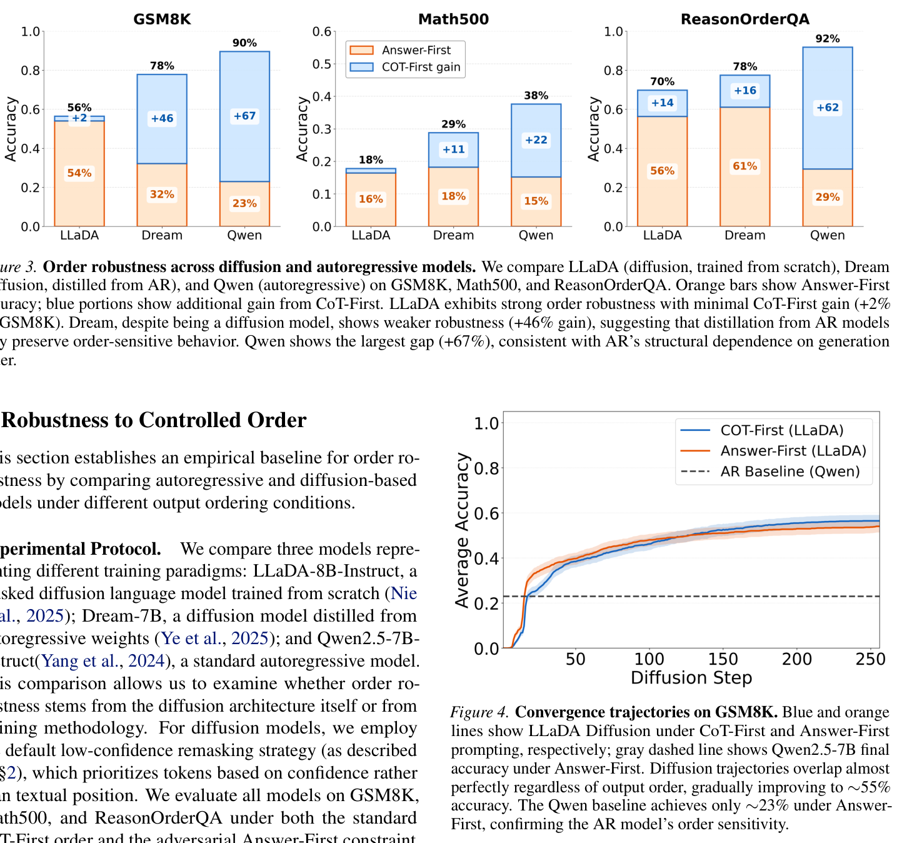
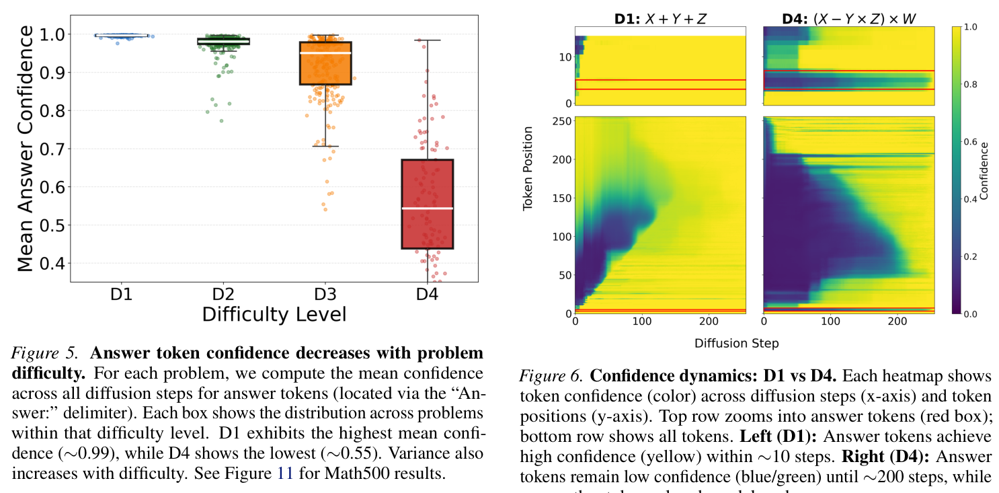
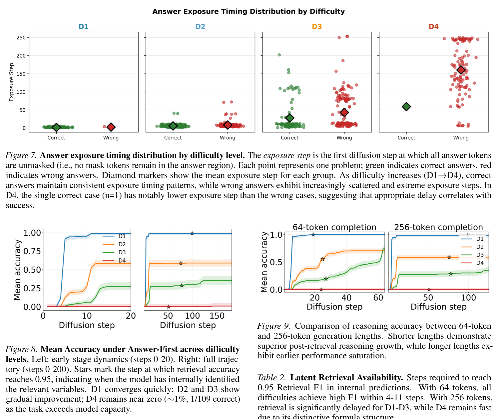

Thinking Out of Order
When Output Order Stops Reflecting Reasoning Order in Diffusion Language Models
When Output Order Stops Reflecting Reasoning Order in Diffusion Language Models
Autoregressive (AR) language models enforce a fixed left-to-right generation order, creating a fundamental limitation when the required output structure conflicts with natural reasoning. In such cases, AR models must commit to answers before generating intermediate reasoning, and this rigid constraint forces premature commitment. Masked diffusion language models (MDLMs), which iteratively refine all tokens in parallel, offer a way to decouple computation order from output structure.
We validate this capability on GSM8K, Math500, and ReasonOrderQA, a benchmark we introduce with controlled difficulty and order-level evaluation. When prompts request answers before reasoning, AR models exhibit large accuracy gaps compared to standard chain-of-thought ordering (up to 67% relative drop), while MDLMs remain stable (≤14% relative drop), a property we term order robustness.

We introduce ReasonOrderQA, a benchmark with controlled difficulty and order-level evaluation. Each problem contains (1) a noisy context with planted facts, (2) a multi-hop reasoning chain, and (3) a final answer. Difficulty is controlled by the number of reasoning hops and context noise level.

MDLMs achieve order robustness by stabilizing simpler tokens (e.g., reasoning steps) earlier in the diffusion process than complex ones (e.g., final answers), enabling reasoning tokens to stabilize before answer commitment.

When prompts request answers before reasoning, AR models exhibit large accuracy gaps while MDLMs remain remarkably stable across all tested benchmarks.




arXiv preprint, January 2026
@article{yu2026thinking,
title={Thinking Out of Order: When Output Order Stops Reflecting Reasoning Order in Diffusion Language Models},
author={Yu, Longxuan and Fu, Yu and Zhang, Shaorong and Liu, Hui and Varma T, Mukund and Ver Steeg, Greg and Dong, Yue},
journal={arXiv preprint arXiv:2601.22035},
year={2026}
}